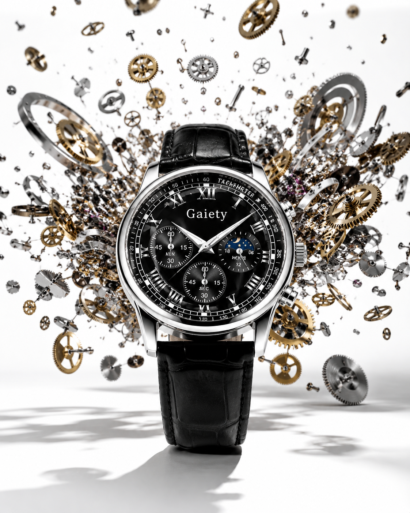

01 / Dial
Mostrador romano
O preto cria a base visual. Os algarismos tradicionais acrescentam uma leitura mais clássica e intencional.
Relógio masculino GAIETY Classic
GAIETY Classic
Um relógio clássico para homens que decidiram cuidar da própria imagem.
Mostrador preto, algarismos romanos e acabamento metálico criam um ponto de intenção no visual. Funciona no trabalho, em encontros e nos momentos em que estar bem-apresentado importa.
Conheça o design →O design
Algarismos romanos, contraste preto e prata e pulseira escura. Tudo trabalha junto para completar o visual sem disputar atenção com ele.
Anatomia do GAIETY
O efeito não vem de uma peça isolada. Mostrador, caixa e pulseira trabalham como um conjunto para criar uma presença clássica e discreta.
O preto cria a base visual. Os algarismos tradicionais acrescentam uma leitura mais clássica e intencional.
A liga de zinco recebe o contraste prateado que destaca o relógio sem transformar o conjunto em ostentação.

O couro PU sintético completa a proposta casual e retrô com uma textura fácil de combinar.
Uma impressão diferente
O relógio não transforma uma camiseta em um terno. Ele mostra que você pensou no conjunto.
Mostrador preto
Preto, prata e uma pulseira escura funcionam com camiseta, polo, camisa ou blazer.
Algarismos romanos
Os marcadores tradicionais reforçam uma presença mais adulta e intencional.

Especificações
Sem esconder informações importantes atrás de palavras vagas.
Registro de compra
Caixa em liga de zinco, pulseira em couro PU sintético e visor em vidro mineral.
O movimento quartzo analógico acompanha bateria tipo botão já instalada.
O pedido acompanha código de rastreamento após o processamento do envio.
Indicado apenas para suor diário e pequenos respingos. Não é apropriado para banho ou imersão.
Em caso de desistência, o atendimento seguirá o prazo legal aplicável às compras realizadas pela internet.
O suporte continua disponível após a compra para orientar sobre pedido, envio e produto.
GAIETY Classic
Um detalhe versátil para completar roupas simples com mais presença e intenção.
Pagamento seguro · Envio rastreado · Atendimento após a compra
Compra consciente
Receba o produto, confira o tamanho, o acabamento e como ele combina com seu estilo. Caso desista da compra, solicite atendimento dentro do prazo legal aplicável às compras online.
Dúvidas
O diâmetro médio varia entre aproximadamente 35 e 41 mm, dependendo da variação do lote. A percepção final também depende da largura do pulso.
Não. A pulseira é produzida em poliuretano, também chamado de couro PU ou couro sintético.
Não. O relógio suporta apenas suor diário e pequenos respingos superficiais.
Sim. O movimento quartzo utiliza bateria tipo botão, já inclusa.
O vidro mineral oferece resistência a riscos leves, mas não é imune a impactos ou superfícies abrasivas.